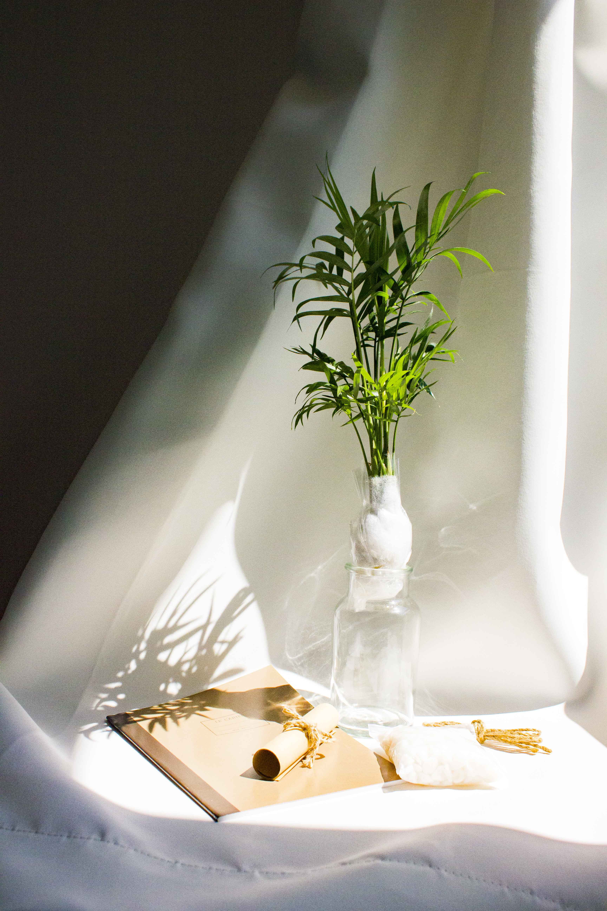
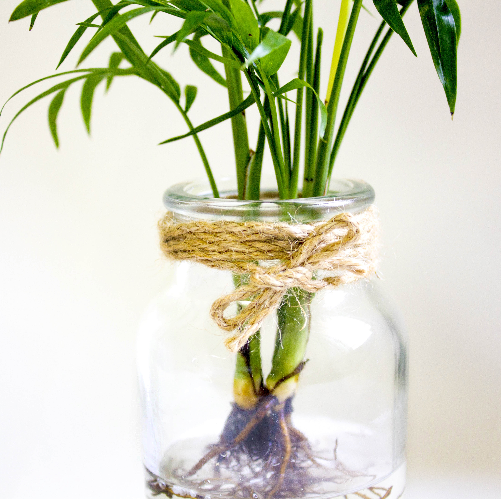

잠깐의 휴식
카페에서 커피 한 잔의 여유를 즐기고 싶지 않으신가요?
수경식물은 작은 부피로도 내 방을 카페처럼
인테리어 효과를 만들어 줍니다.
관리하기 쉬워 초보자도 쉽게 키울 수 있습니다.
저렴한 가격으로 나만의 휴식공간을 만들어 보세요.

Your rest with plants
Simple interior
01
패키지구성
수경식물, 유리병, 자갈, 노끈, 설명서, 노트

*이 제품은 흙 제거 된 상태로 배송이 됩니다.
Make your room a cafe
02
테이블야자
높은 인테리어 효과로 많은 사랑은 받는 테이블야자.
테이블야자는 NASA에서 선정한 공기정화 식물로
미세먼지 제거, 전자파 차단, 실내공기 정화 효능을 가지고 있습니다.
공중에 떠다니는 벤젠, 포름알데히드, 암모니아, 유독가스 등
냄세 제거에 탁월합니다. 보통 화장실, 신발장에 키우지만
이름이 테이블인 것처럼 테이블 위에 놓고 많이 사용합니다.
실내면 어디든 잘 자라는 테이블야자,
반음지 식물로 어두운 곳에서도 잘 자랍니다.
직사광선은 피하고 대부분은 실내에서 키웁니다.
어느 공간이든 쉽게 키울 수 있는 장점을 가지고 있어
인기 있는 식물 중 하나입니다.
키우기 쉬워 초보자들이 많이 찾는 식물이고
작은 부피로 인테리어 효과가 높아 선물용으로도 인기가 많습니다.
Recommend to you
Makes good luck
03
개운죽

영어 이름은 럭키 밤부(lucky bamboo), 행운의 대나무입니다.
늘 푸른 잎을 유지하고 있어 ‘만년청’이라 불립니다.
수경재배 대표적인 식물입니다.
개운죽은 행운을 부르는 식물이라는 의미로
집들이 선물, 취임선물, 개업선물 등 선물용으로도 인기가 많은 식물입니다.
물만 있으면 스스로 잘 자라는 식물이여서 누구나 쉽게 키울 수 있습니다.
공기정화와 천연 가습기가 되고 실내 습도를 조절해 줍니다.
키우기가 너무 쉬운 식물이라
첫 시작으로 키워보기 좋은 식물로
초보자들이 많이 찾습니다.
행운을 부르는 개운죽,
식물 키우보는 건 어떠한가요?
Can have your plant
04
DIY과정
한 번 세척해 줍니다.
유리병 안에 자갈을 넣어줍니다.
식물을 유리병 안에 넣어줍니다.
이용해 식물 위치를 잡아줍니다.
물을 채워줍니다.

노끈으로 묶어주면나만의 식물 완성.
***Tip***
1. 수경재배 시작한 후 1주일 정도 물을 매일 갈아줍니다.
2. 수돗물을 사용한다면 하루전에 미리 받아둬서 사용합니다.
3. 잎이 마르지 않도록 잎 주위에 분무기를 뿌립니다.
4. 햇빛을 많이 보면 물에 녹색이끼가 생길 수 있습니다.
5. 물에서는 영양소가 부족하기 때문에 한달에 한두번 액상영양제 1~2방울 넣어주면 좋습니다.
6. 만약 화분으로 키우고 싶으신 분은 분갈이 흙을 사서 심어주면 됩니다.
구매 유의사항
1. 식물은 특성상 단순변심에 의한 교환&환불이 불가능합니다.
2. 배송 등의 문제로 상품에 이상이 있을 경우 사진과 함께 문의 주시면 환불 및 재발송 해드립니다.
3. 식물은 색깔, 모양, 크기, 등이 조금씩 다를 수 있습니다.
4. 유리병에 기포, 약간의 스크래치 등이 있을 수 있습니다.